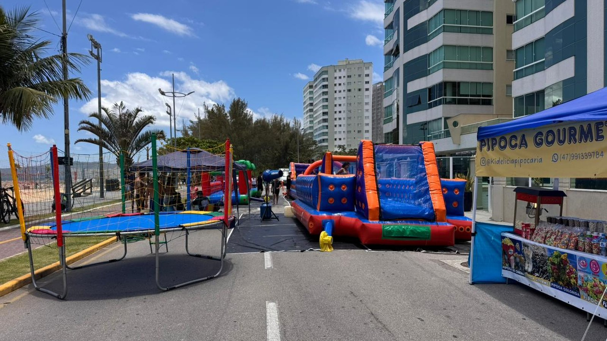

Itapema · Turismo
Itapema · TurismoO Viva Praia faz um ano no domingo com 10 edições realizadas, conta que a Prefeitura não publica, e o recorde de expositores segue sendo o de dezembro de 2025
A conta das edições, feita por nós.
A nota publicada nesta sexta-feira fechou a conta que estava em aberto desde 2 de outubro: são cerca de 200 expositores na Orla do Centro, no trecho a partir da Rua 165, das 10h às 18h. O maior número que a Prefeitura já havia publicado era o de 14 de dezembro de 2025, com mais de 170. A mesma nota traz a programação completa, e nela contamos 12 empresas e grupos parceiros.
Em 30 segundos · Modo de Leitura, formato original Santa Informa
O Viva Praia tem edição especial neste domingo.
É 11 de outubro, véspera do Dia das Crianças.
Das 10h às 18h, na Orla do Centro.
O trecho é a partir da Rua 165.
A Prefeitura publicou o número que faltava.
São cerca de 200 expositores.
Ela chamou a feira de maior da história duas vezes.
Na nota de 2 de outubro e na desta sexta.
Só a segunda diz maior em quê.
O recorde publicado antes era de 14 de dezembro de 2025.
Naquele dia foram mais de 170 expositores.
A diferença é de cerca de 30 bancas.
O projeto nasceu com 140 stands.
Contamos a programação publicada.
São 12 empresas e grupos parceiros.
Mais duas tendas da própria Prefeitura.
A CrediFoz distribui 500 picolés.
A Val com Amor doa 250 cupcakes.
Studio Scooters e Duact entram com pipoca.
Tem palco das 10h às 17h.
Coral, dança, K-Pop e Banda Municipal.
Em agosto saiu uma chamada pública.
É a 002.2026, de 13 de agosto.
O prazo de proposta fechou em 5 de outubro.
Contamos essa chamada aqui em setembro.
O resultado dela nunca foi publicado.
A nota não diz quem veio do edital.
O edital dava nove exemplos de apoio.
Na programação achamos seis deles.
Faltam Festa das Cores e ingresso de passeio.
E o prêmio de bicicleta ou patinete.
TurismoPublicada em Redação Santa Informa

A Prefeitura de Itapema publicou nesta sexta-feira, 9 de outubro, o número que faltava nas notas anteriores sobre o Viva Praia de domingo: a feira terá cerca de 200 expositores. É a primeira vez que a expressão "maior edição da história" aparece acompanhada de uma medida. Em 2 de outubro a Prefeitura já havia usado a mesma expressão, sem dizer maior em quê, e foi esse vazio que apontamos na matéria de 4 de outubro. A edição é no domingo, 11 de outubro, véspera do Dia das Crianças, das 10h às 18h, no trecho da Orla do Centro a partir da Rua 165. O endereço também é informação nova: as notas anteriores diziam só "Orla do Centro".
O maior número de expositores que a própria Prefeitura já havia publicado é o da edição de 14 de dezembro de 2025, com mais de 170. Os cerca de 200 de domingo ficam, portanto, uns 30 acima desse recorde, uma diferença de perto de 18%. E ficam bem distantes do tamanho com que o projeto trabalhava em setembro, quando a Prefeitura falava em 140 stands. De 140 para 200 são 60 bancas a mais, ou 43%. As três contas são nossas, feitas sobre números que a Prefeitura publicou em momentos diferentes. Vale a ressalva: "cerca de 200" é estimativa de véspera, e a feira ainda não aconteceu.
A nota desta sexta traz a programação completa, hora a hora, e é aí que aparecem os nomes. Contamos 12 empresas e grupos fora da Prefeitura: Catamarã Itapema, CrediFoz Cooperativa Sistema Ailos, Barraca Anjos e Arcanjos, Nobe Davi, Val com Amor, Viva 3D, Hotspot English School, LAN/Via Motos, Robôs Adoráveis, Adrians Personalizado, Studio Scooters e Duact. Dois deles publicaram quantidade: a CrediFoz distribui 500 picolés às 11h e a Val com Amor doa 250 cupcakes no mesmo horário. Studio Scooters e Duact entram com pipoca. Somam-se a isso duas tendas da própria Prefeitura, a de Turismo e a de Cultura. No palco, das 10h às 17h, passam corais, escolas de dança, Palhaço Nestor, aula de K-Pop, a Banda Municipal e o musical Heróis da Literatura.
Esses parceiros têm um antecedente. Em 13 de agosto a Secretaria de Turismo abriu a Chamada Pública 002.2026, para captar patrocínio e apoio justamente desta edição, com prazo de proposta até 5 de outubro. Contamos essa chamada em 27 de setembro. O edital dava nove exemplos do que a empresa poderia oferecer. Comparando aquela lista com a programação publicada agora, seis aparecem: pipoca, algodão-doce, picolé, pintura facial, brinquedo inflável e oficina. Três não aparecem: a Festa das Cores, o ingresso para passeio e o prêmio do tipo bicicleta ou patinete. Há sorteios na programação, às 12h30 e às 14h40, mas ela não diz o que será sorteado. A comparação é nossa.
O resumo de 30 segundos está no topo e a versão completa é o texto acima. Aqui ficam as três leituras da casa sobre o mesmo assunto.
Clara, a otimista
Domingo de sol na orla com 200 bancas e um palco das dez às cinco é um programa inteiro de graça, e isso numa cidade onde quase tudo que envolve criança custa dinheiro. Quem mora aqui desce a pé e passa o dia. Quem tem banca leva o Dia das Crianças, que é data boa de venda, sem pagar por ponto em shopping.
E tem um detalhe bonito nessa lista de parceiros: são nomes daqui. Cooperativa de crédito, escola de inglês, oficina de personalizados, loja de scooter. Não é patrocinador nacional mandando verba, é comércio da cidade entrando com picolé, cupcake e pipoca para o vizinho. A feira cresceu 43% em um ano puxada por esse tipo de gente, e isso costuma durar mais do que crescimento comprado.
Seu Prudêncio, o criterioso
Merece atenção o fato de o resultado da chamada pública não ter saído. A Secretaria abriu edital em 13 de agosto, deu prazo até 5 de outubro e nesta sexta publicou a lista de quem vai estar lá. As duas coisas quase certamente se encontram, mas a página do edital segue sem ata e sem relação de selecionados. Quem apresentou proposta e não foi chamado não tem onde conferir o motivo, e esse é o uso prático de publicar resultado.
Vale acompanhar também o número em si. "Cerca de 200" é estimativa de véspera, e a comparação com os "mais de 170" de dezembro usa duas aproximações, não duas contagens. Enquanto a Prefeitura não publicar o número fechado depois da feira, o recorde é uma informação de divulgação, não um dado. Uma sugestão útil é a Secretaria divulgar na segunda-feira quantas bancas de fato montaram, separadas por tipo. Custa uma planilha que ela já tem, porque credenciamento de feirante é controlado.
Dito isso, o que a Prefeitura fez nesta sexta é o certo. Ela foi cobrada por dizer "maior" sem dizer em quê, e desta vez publicou o número, o trecho da orla e a programação hora a hora, com o nome de cada parceiro e a quantidade de picolé e de cupcake. Isso é mais transparência do que a maioria dos eventos de litoral oferece, e permite que qualquer um faça a conferência depois.
Caco, o sarcástico
Levou duas notas para a Prefeitura dizer em que a maior edição da história era maior. Na primeira era maior em suspense.
Reclamação registrada: o edital prometia Festa das Cores, ingresso de passeio e prêmio de bicicleta, e a programação chegou com robô de LED e pintura de bolachinha. Troca honesta, mas quem já tinha prometido a bicicleta para o filho vai ter que renegociar.
Mas tá lotado porque o lugar é bom. Duzentas bancas na beira da praia num domingo de outubro, com picolé de graça às onze, é o tipo de problema que cidade nenhuma do litoral reclama de ter.
Fontes: o número de cerca de 200 expositores, o horário das 10h às 18h, o trecho da orla a partir da Rua 165, a programação completa do palco e das tendas, os nomes dos parceiros, os 500 picolés da CrediFoz, os 250 cupcakes da Val com Amor e as falas da secretária de Turismo, Pati Marin, e do prefeito Alexandre Xepa estão na nota Viva Praia terá maior edição da história neste domingo em Itapema, publicada pela Prefeitura de Itapema em 9 de outubro de 2026 e lida por nós no mesmo dia. A primeira menção a "maior edição", sem número, está em Itapema prepara maior edição do Viva Praia com atrações gratuitas para o Dia das Crianças, de 2 de outubro. A Chamada Pública 002.2026, os três níveis de apoio e a ausência de ata, de lista de selecionados e de homologação foram conferidos por nós em 9 de outubro na página do edital Viva Praia, edição especial do Dia das Crianças, publicada em 13 de agosto de 2026. O recorde de mais de 170 expositores em 14 de dezembro de 2025 e a contagem das edições estão na nossa matéria O Viva Praia faz um ano no domingo com 10 edições realizadas, de 4 de outubro. Os 140 stands, o prazo de 5 de outubro e os nove exemplos de apoio do edital estão na nossa matéria Itapema procura empresa para bancar a pipoca e o algodão-doce do Viva Praia do Dia das Crianças, de 27 de setembro. As diferenças de 30 e de 60 bancas, os percentuais de 18% e 43%, a contagem dos 12 parceiros e a comparação entre os exemplos do edital e a programação são contas nossas.
Itapema · TurismoA conta das edições, feita por nós.
O edital que originou esta programação.
 Itapema · Economia
Itapema · EconomiaOutro atrativo da orla, no mesmo fim de semana.